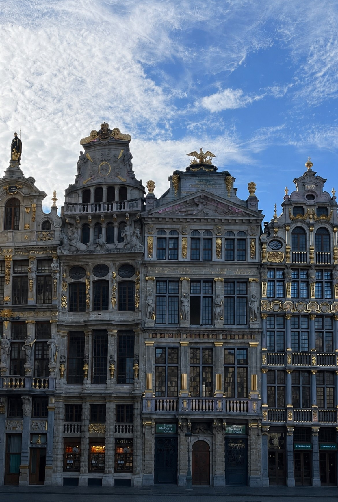
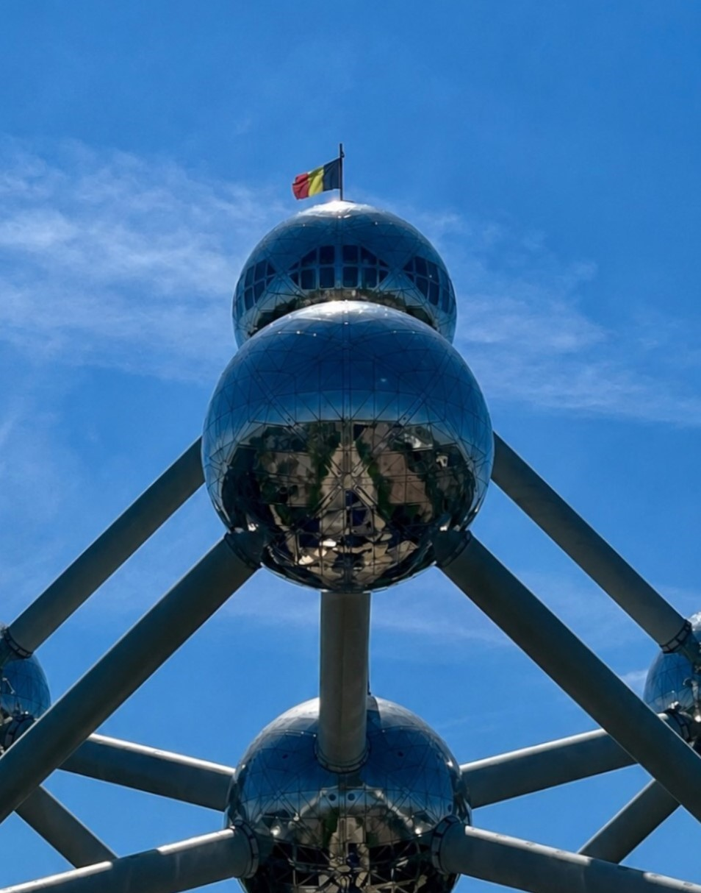
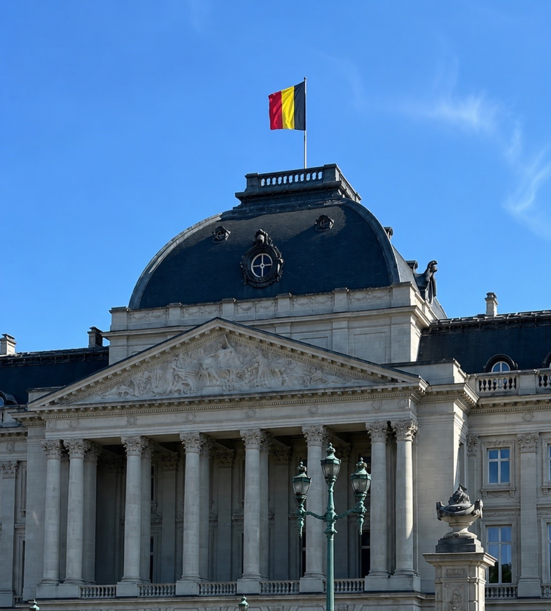
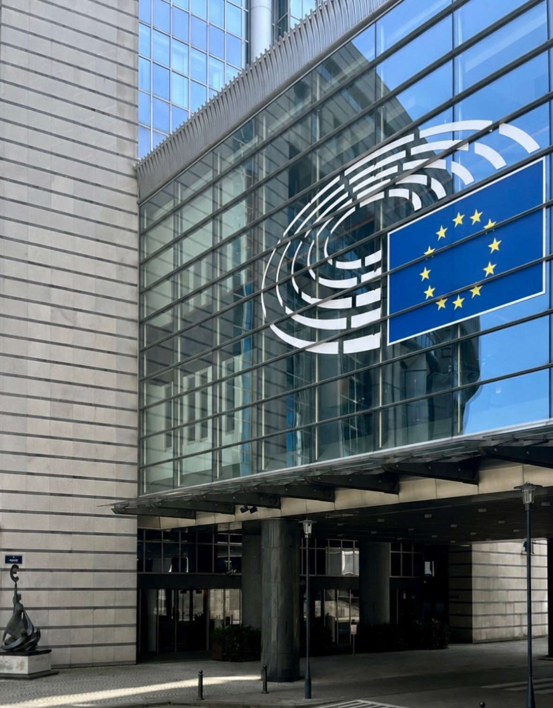

Belgio: La capitale Bruxelles
Un weekend lungo di 3 giorni tra birre artigianali, patatine fritte, il centro storico e il cuore dell'Europa nella capitale belga
Panoramica dell'Itinerario
Questo itinerario ti porterà attraverso i luoghi più iconici di Bruxelles, dalla maestosa Grand-Place patrimonio UNESCO ai quartieri popolari dei Marolles, passando per il Palazzo Reale, la Cattedrale gotica dei Santi Michele e Gudula e il celebre Manneken Pis. Bruxelles è una città a misura d'uomo, caotica e ordinata allo stesso tempo, dove si cammina volentieri e ogni vicolo nasconde qualcosa di inaspettato.
Itinerario Giorno per Giorno
Arrivo a Bruxelles: Atomium e primo impatto con la città

Attività:
- Mattina: Arrivo all'aeroporto Charleroi (Brussels South Charleroi Airport). Appena usciti dal terminal troverete una stazione di navette Flibco enorme e ben organizzata: potete prendere la prima disponibile per Bruxelles-Midi (stazione centrale) senza aspettare un orario fisso. Se avete acquistato il biglietto online scegliendo un orario specifico, non preoccupatevi, il biglietto vale come giornaliero, quindi mettetevi in fila e salite sulla prima navetta disponibile. Il bus vi porta direttamente alla Gare du Midi (Brussel-Zuid) nel centro di Bruxelles. Da lì prendete la metro Linea 6 in direzione Heizel, e lì troverete l'Atomium a pochi passi dall'uscita. Si può salire fino alla sfera superiore con un ascensore ad alta velocità e godere di una vista panoramica su tutta Bruxelles. Il biglietto adulto costa circa 17€.
- Pomeriggio: Tornati in metro alla Gare du Midi, prendete la metro o camminate fino all'hotel per il check-in. L'area intorno alla Porte de Hal e ai Marolles è una buona base: prezzi più contenuti rispetto al centro, ma a 10-15 minuti a piedi da tutto. Lasciate i bagagli in camera e uscite subito.
- Sera: Prima serata libera per orientarsi e mangiare qualcosa nel quartiere. I locali nei Marolles sono autentici e molto meno turistici di quelli intorno alla Grand-Place: ottimo posto per provare le prime patatine fritte belghe nei baracchini di strada, dove le friggono in olio fresco e le servono in un cartoccio con una salsa a scelta. Una tappa imperdibile.
Centro storico, Grand-Place e statue

Attività:
- Mattina: Se siete mattinieri, il mercato delle pulci di Place du Jeu de Balle apre alle 6 di mattina tutti i giorni. È uno dei mercati più antichi e autentici di Bruxelles, pieno di oggetti vintage, mobili, libri, vinili e paccottiglia di ogni genere. L'atmosfera al mattino presto, con poca gente e i venditori che sistemano i banchi, è qualcosa di speciale. Non serve comprare niente: vale la pena passarci anche solo per guardare. Dal mercato si sale verso il Palazzo di Giustizia di Bruxelles, una struttura imponente. Da lì si scende verso la Chiesa di Nostra Signora delle Vittorie al Sablon, una chiesa gotica di grande eleganza, con un piccolo giardino davanti piacevole per una pausa. Subito dopo si raggiunge il Mont des Arts, il belvedere che regala una delle viste più belle sul centro storico di Bruxelles: si vedono i tetti, il campanile del municipio e la cattedrale tutti insieme. È uno di quei posti dove vale la pena fermarsi cinque minuti. Continuando si passa davanti al Palais Royal de Bruxelles, la residenza ufficiale del Re dei Belgi. Il Parc de Bruxelles di fronte al palazzo è il luogo ideale per una pausa su una panchina prima di riprendere. Poco distante si trova la Cathédrale Saints-Michel-et-Gudule, la cattedrale gotica con due torri che si eleva sul centro della città. Nei pressi del centro storico ci sono diversi posti dove mangiare bene senza spendere troppo. Io mi sono fermato in un locale vicino alla Grand-Place e ho preso le moules-frites, cozze e patatine fritte, un classico assoluto della cucina belga che bisogna assolutamente provare almeno una volta.
- Pomeriggio: Riprendendo la passeggiata, si passa dalla Place d'Espagne con la statua di Don Chisciotte e Sancho Panza, un dettaglio inaspettato e simpatico nel mezzo di Bruxelles, poi dalla fontana di Charles Buls, il sindaco che salvò la Grand-Place dalle demolizioni ottocentesche. Si arriva quindi alla Grand-Place de Bruxelles, una delle piazze più belle d'Europa (patrimonio UNESCO dal 1998): le facciate dorate dei palazzi delle corporazioni e il municipio gotico formano un insieme che toglie il fiato, soprattutto di sera quando tutto si illumina. Da lì si entra nelle Galeries Royales Saint-Hubert e de la Reine, la galleria coperta ottocentesca più antica d'Europa, elegantissima, piena di cioccolaterie, librerie e caffè storici e poi si trova la Jeanneke Pis, la versione femminile meno nota del Manneken Pis, nascosta in un vicolo. Si passa dalla Bourse (l'ex borsa di Bruxelles, oggi spazio culturale) e si arriva infine al Manneken Pis, la piccola statua di bronzo simbolo della città.
- Sera: La Grand-Place di sera è ancora più bella che di giorno, se riuscite a tornare dopo cena, vale assolutamente la pena. Potete cenare nella zona o esplorare i vicoli del centro storico che di notte prendono una luce diversa.
Quartier Européen, Parlamento Europeo e rientro

Attività:
- Mattina: Colazione abbondante, check-out dall'hotel e ultima mezza giornata dedicata al Quartiere Europeo, uno dei luoghi più interessanti e meno scontati di Bruxelles. Qui si trova anche il Parlamento Europeo, dove è possibile prenotare una visita guidata con ingresso all'Emiciclo, la sala plenaria dove si vota. È un'esperienza diversa dal solito e, se vi interessa la politica europea anche solo un po', ne vale assolutamente la pena. A due passi dal Parlamento Europeo c'è il Parc du Cinquantenaire, un parco monumentale con il grande arco trionfale costruito per il cinquantenario dell'indipendenza belga. È un posto bello e tranquillo per una camminata finale prima di riprendere i bagagli e andare in aeroporto.
- Pomeriggio: Dalla Gare du Midi partono i bus Flibco per Charleroi Airport con orari regolari. Io ho preso quello delle 16:40 per un volo serale. Come all'andata, se avete un biglietto con orario specifico potete comunque salire sulla corsa precedente disponibile: il biglietto vale per la giornata.
Riepilogo Costi Stimati
*Costi esclusi: voli, assicurazione viaggio, shopping, spese personali
Consigli Pratici
Quando Andare
Aprile, maggio e giugno sono i mesi migliori: clima mite, giornate lunghe e la città è vivace senza essere opprimente. Settembre e ottobre sono un'ottima alternativa con meno turisti. Evitate i mesi invernali se siete sensibili al freddo e alle piogge belghe.
Come Arrivare da Charleroi
Fuori dall'aeroporto di Charleroi (Brussels South) trovate subito la stazione delle navette Flibco, ben segnalata e con partenze frequenti per la Gare du Midi. Se avete comprato il biglietto online scegliendo un orario, sappiate che vale come giornaliero: andate dritti in fila e salite sulla prima navetta disponibile, senza aspettare il vostro slot. Il viaggio dura circa un'ora. Anche al ritorno vale lo stesso: comprate il biglietto in anticipo online e salite sulla corsa più comoda.
Come Muoversi in Città
Il centro storico di Bruxelles si gira tranquillamente a piedi: le distanze sono piccole e camminare è il modo migliore per scoprire i vicoli e i dettagli nascosti. Per spostarsi tra quartieri più distanti (come dall'Heizel al centro) si usa metro o bus: per pagare basta appoggiare la carta di credito direttamente ai tornelli, nessuna app, nessun biglietto da fare in anticipo.
Cosa Mangiare
Le patatine fritte belghe nei baracchini di strada sono fritte in grasso di manzo, croccanti fuori e morbide dentro, servite con decine di salse diverse. Provatele almeno una volta. Le moules-frites (cozze con patatine) sono il piatto più classico: abbondanti e buone quasi ovunque. La carbonnade flamande, manzo stufato nella birra belga, è invece il piatto invernale per eccellenza, ricco e confortante. Per i dolci, i waffle e le praline di cioccolato sono d'obbligo.
Birra belga: dove berla
Il Delirium Café, a due passi dalla Grand-Place, è il posto simbolo: oltre 2.000 birre in carta e la possibilità di ordinare un metro di birra con una selezione di etichette diverse. Perfetto per chi vuole esplorare i diversi stili belghi, senza doversi impegnare su una sola scelta. Non è economicissimo ma è un'esperienza. Molti café locali nei Marolles hanno comunque ottima birra a prezzi più contenuti.